Bezpośredni dostęp do linii brzegowej przy domach
Bez codziennego dojazdu i szukania publicznej plaży. Tafla Jeziora Krzywe jest częścią widoku z obiektu.
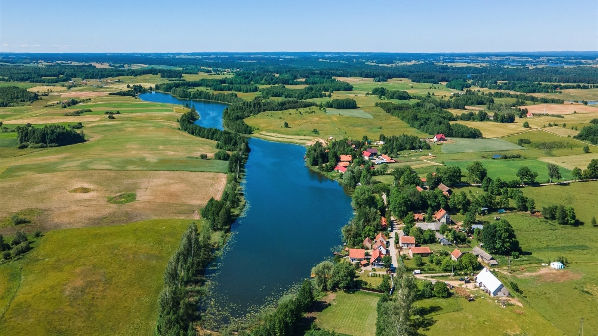
Jezioro Krzywe · domy nad samą wodą
Całoroczne domy wakacyjne z bezpośrednim dostępem do linii brzegowej i pomostu — spokojne Mazury blisko Piecek, Mrągowa i Mikołajek.
Najważniejsze w jednym spojrzeniu
Bez codziennego dojazdu i szukania publicznej plaży. Tafla Jeziora Krzywe jest częścią widoku z obiektu.
Miejsce na pierwszą kawę, odpoczynek i spokojne obserwowanie, jak światło zmienia jezioro w ciągu dnia.
Krajobraz Pojezierza Mrągowskiego bez miejskiego zgiełku, a jednocześnie blisko Piecek, Mrągowa i Mikołajek.
W pierwszej linii
Krzywe to jezioro rynnowe otoczone łagodnym, polodowcowym krajobrazem. Leży między miejscowościami Krzywe, Dłużec i Krzywy Róg; jego południowy brzeg styka się z gminą Piecki.
W Krzywe Lake Houses woda jest częścią pobytu od pierwszej kawy. Goście mają dostęp do linii brzegowej i pomostu przy obiekcie, bez pakowania samochodu i planowania dojazdu na publiczną plażę.
Zobacz domy w pierwszej linii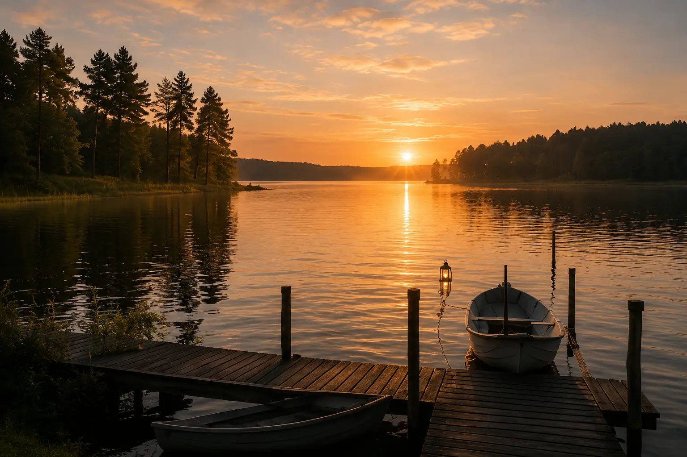
Rytm dnia nad wodą
Trzy odsłony tego samego miejsca. Przełącz porę dnia i zobacz, jak zmienia się klimat jeziora.
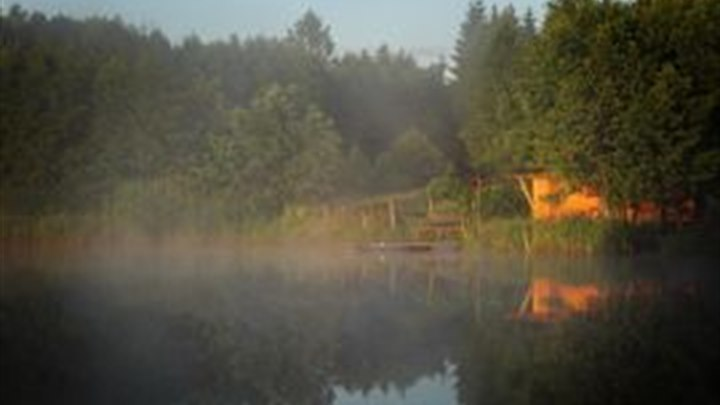
07:10Gładka tafla, lekka mgła i pomost tylko dla Was. To pora na kawę, cichy spacer wzdłuż brzegu albo po prostu kilka minut bez planu.
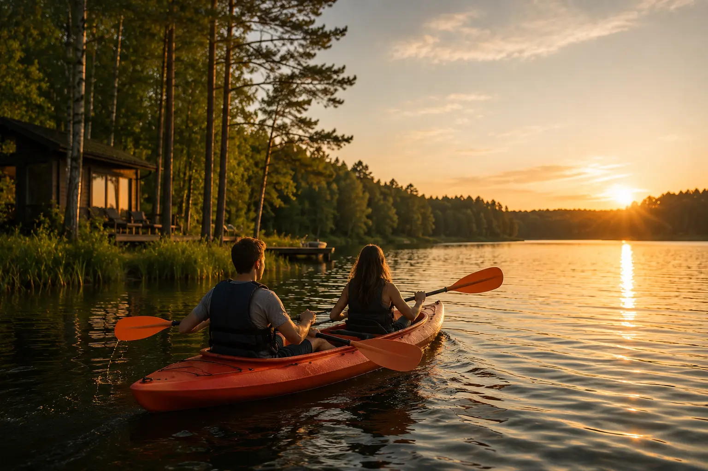
12:40Przy odpowiednich warunkach dzień może upłynąć na kajaku, desce SUP albo przy brzegu. Zawsze z uwzględnieniem pogody, umiejętności i zasad bezpieczeństwa.
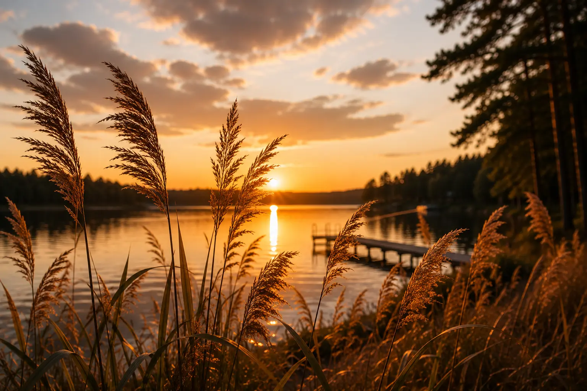
20:54Wieczorem jezioro zwalnia razem z Wami. Taras, szmer trzcin i odbicie nieba tworzą naturalne tło dla rozmów bez pośpiechu.
Jezioro w liczbach
Podajemy zakres powierzchni, ponieważ dostępne opracowania różnią się pomiarem. Pozostałe wartości pochodzą z danych morfometrycznych cytowanych w katalogach jezior.
Pojezierze Mrągowskie — jezioro leży w powiecie mrągowskim, a południowy brzeg wyznacza granicę z gminą Piecki. Zobacz dane i źródła
Całoroczne domy nad jeziorem
Jezioro Krzywe nie kończy się wraz z wakacjami. Każda pora roku zmienia światło, tempo i sposób spędzania czasu nad wodą.
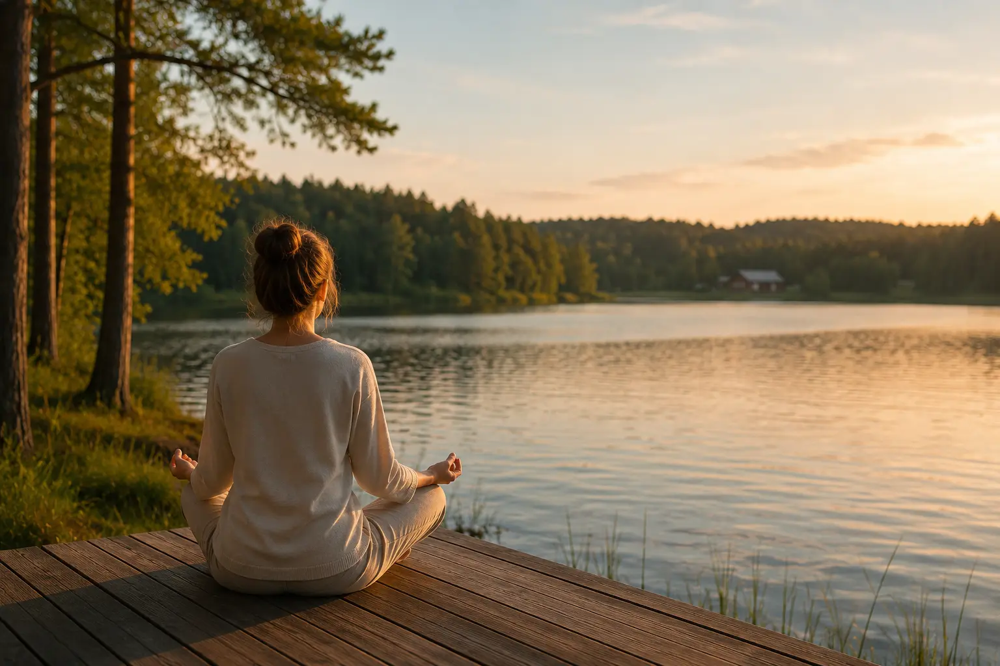
01Dobre miesiące na spokojny weekend, rowerowe odkrywanie okolicy i pierwszą kawę na pomoście.
Kajak, SUP, rodzinny czas przy brzegu i długie wieczory, które najlepiej kończą się na tarasie.
Pora na wolniejsze spacery, widoki z domu i Mazury bez intensywnego rytmu wysokiego sezonu.
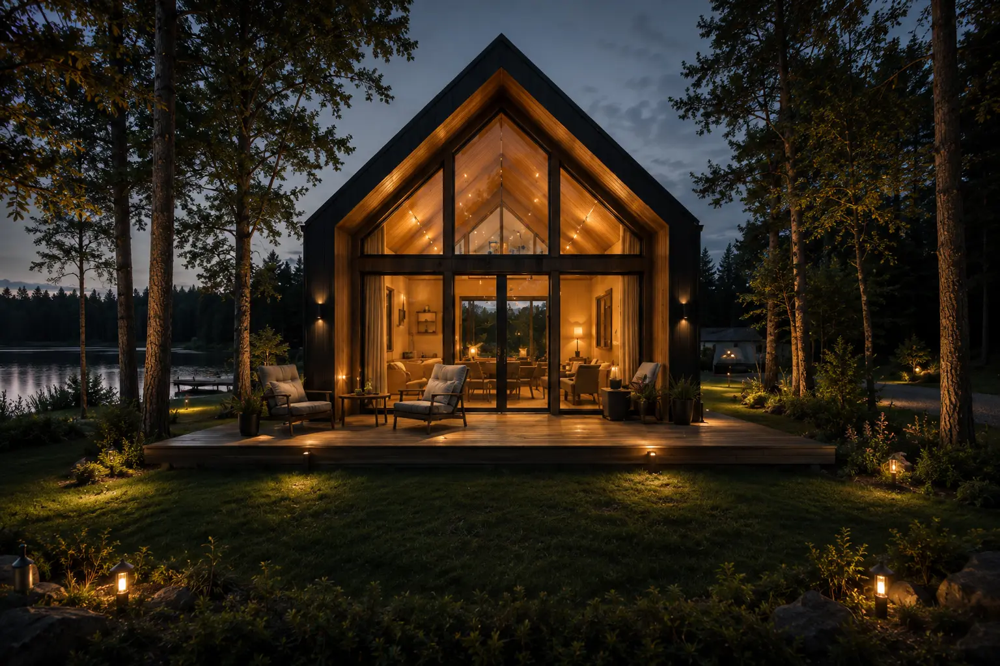
04Całoroczny komfort, spokojne wieczory i krajobraz, który zimą pokazuje najbardziej minimalistyczną odsłonę.
Twój sposób na wodę
Kliknij aktywność, aby zobaczyć praktyczny opis. Dostępność wyposażenia i bieżące warunki potwierdzimy przed pobytem.
Najprostszy wariant często działa najlepiej: książka na pomoście, rozmowa przy wodzie i widok, który nie domaga się kolejnej atrakcji.
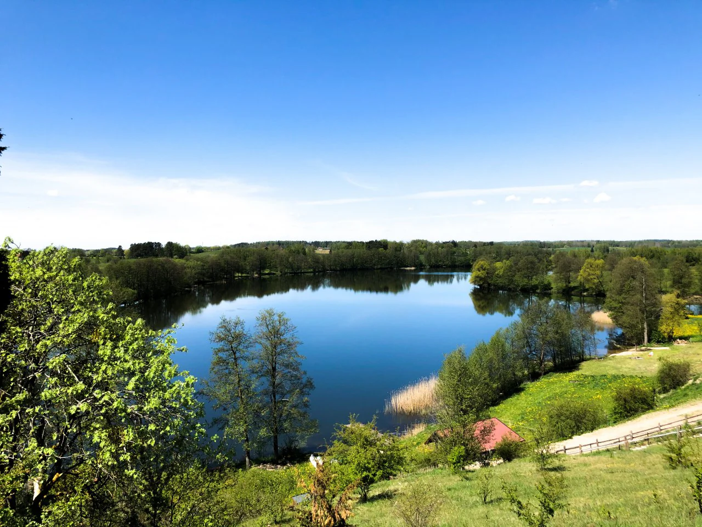
Przy spokojnej pogodzie można zaplanować aktywność na wodzie. Przed wejściem sprawdź warunki, sprzęt i kamizelki; dzieci pozostają pod stałą opieką dorosłych.
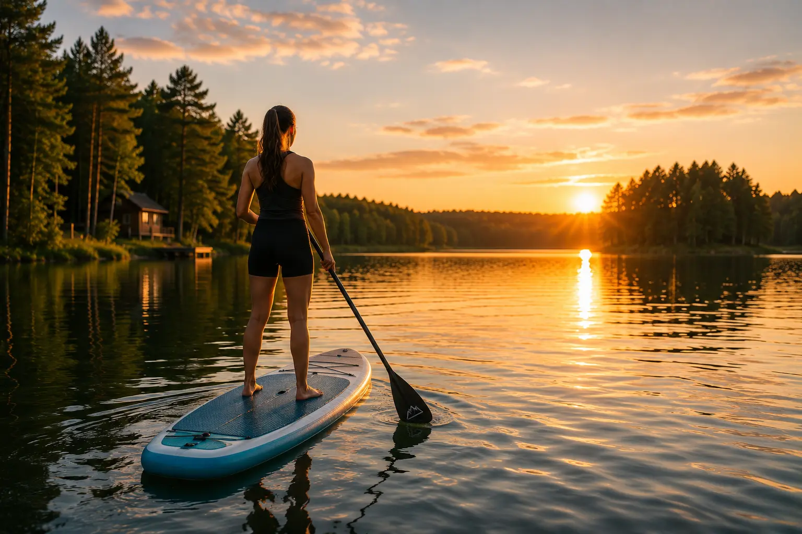
Okolica była opisywana już w dawnych przewodnikach jako „garbaty świat” Mazur — z morenami, zagłębieniami i widokami zmieniającymi się za każdym wzniesieniem.
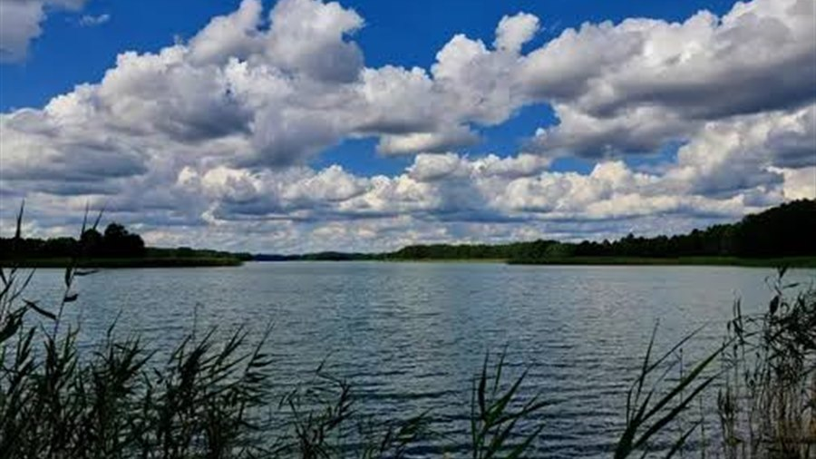
Przed wędkowaniem sprawdź aktualnego gospodarza wody, regulamin łowiska i wymagane zezwolenie. Zasady oraz okresy ochronne mogą się zmieniać.
Jezioro w kadrach
Zdjęcia Jeziora Krzywe i dodatkowe kadry budujące mazurski klimat. Otwórz dowolny obraz, aby zobaczyć go w większym formacie.
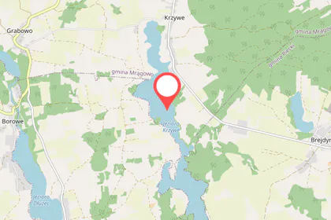
Krzywe · MazuryMiędzy ciszą a dobrym dojazdem
Jezioro leży na Pojezierzu Mrągowskim. Okolica Krzywego łączy spokojny krajobraz z trasami prowadzącymi w stronę Piecek, Mrągowa i Mikołajek.
Najbliższa baza codziennych spraw i dobry punkt startowy do odkrywania Puszczy Piskiej oraz okolic Krutyni.
Atrakcje w okolicy PiecekPromenady, restauracje, wydarzenia i miejski dzień można połączyć ze spokojnym wieczorem w domu nad Jeziorem Krzywe.
Co zobaczyć w MrągowieŻeglarski klimat i turystyczne centrum Mazur są wystarczająco blisko na wycieczkę, a Krzywe pozostaje spokojną bazą nad wodą.
Co zobaczyć w MikołajkachSpokojnie i odpowiedzialnie
Jezioro jest naturalnym akwenem. Linia brzegowa przy obiekcie nie jest strzeżonym kąpieliskiem — bezpieczeństwo zaczyna się od oceny warunków i własnych umiejętności.
Sprawdź pogodę i wiatr, stan sprzętu oraz dopasowanie kamizelki. Nie wypływaj podczas burzy, po alkoholu ani przy ograniczonej widoczności.
Dzieci wymagają stałej, bezpośredniej opieki osoby dorosłej — również na pomoście i w płytkiej wodzie.
Przed rozpoczęciem połowu sprawdź gospodarza wody, bieżący regulamin, wymagane opłaty oraz okresy ochronne.
Nie wchodź w trzcinowiska, nie płosz ptaków i zabierz ze sobą wszystkie odpady. Cisza jest częścią tego miejsca.
Najczęstsze pytania
Najważniejsze informacje o położeniu, dostępie do wody i aktywnościach zebraliśmy w jednym miejscu.
505 586 950Na Pojezierzu Mrągowskim, w powiecie mrągowskim. Nad brzegami leżą Krzywe, Dłużec i Krzywy Róg, a południowa część jeziora graniczy z gminą Piecki.
Tak. Krzywe Lake Houses ma bezpośredni dostęp do linii brzegowej i pomostu przy obiekcie. Nie trzeba dojeżdżać nad wodę.
Tak. Oba domy są przygotowane do pobytów przez cały rok — także wiosną, jesienią i zimą. Każdy dom mieści do 10 osób.
Orientacyjnie około 10 minut samochodem do Piecek, 20 minut do Mrągowa i 30 minut do Mikołajek. Rzeczywisty czas zależy od wybranej trasy i warunków na drodze.
Linia brzegowa przy obiekcie nie jest strzeżonym kąpieliskiem. Korzystanie z jeziora wymaga samodzielnej oceny pogody, warunków, umiejętności i stałej opieki nad dziećmi.
Przy odpowiednich warunkach można planować aktywności na wodzie. Dostępność wyposażenia potwierdzamy przed pobytem; zawsze potrzebna jest właściwie dobrana kamizelka.
Taką aktywność należy poprzedzić sprawdzeniem aktualnego gospodarza wody, regulaminu i wymaganych zezwoleń. Zasady mogą się zmieniać.
Pierwsza linia jeziora
Wybierz jeden dom dla rodziny albo dwa domy dla grupy i zapytaj o dostępność wybranego terminu.